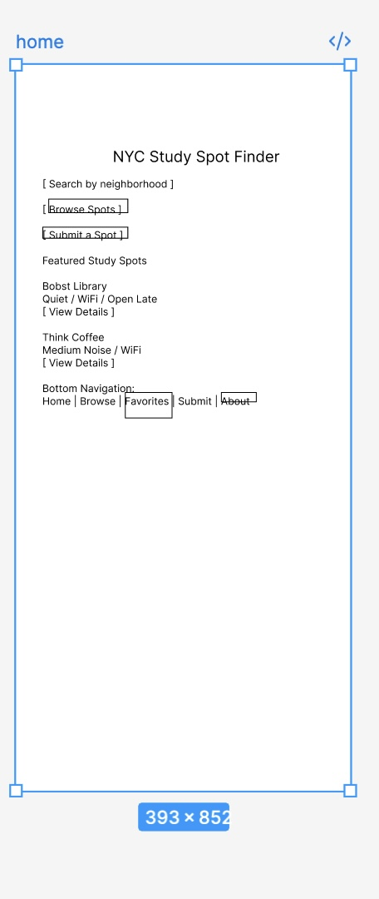
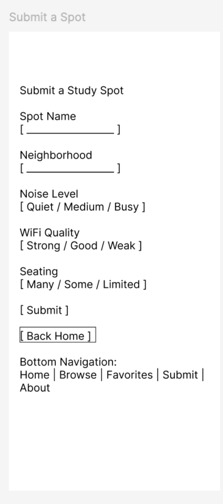
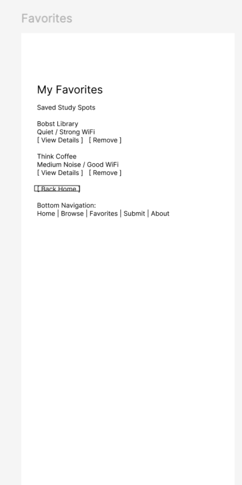
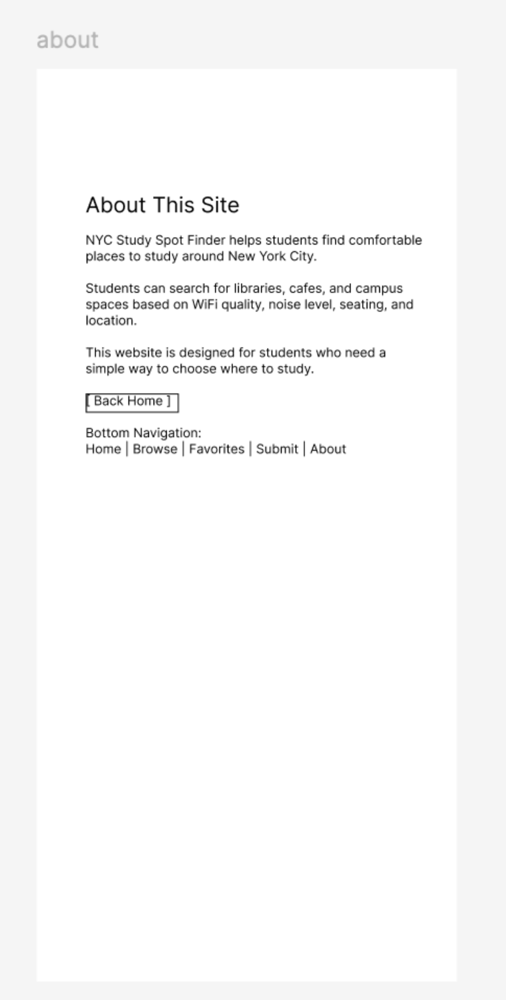

Clickable Prototype
This clickable prototype shows the user flow for my imaginary mobile website, NYC Study Spot Finder.
View Clickable PrototypeWireframes
These mobile wireframes show the main pages of the imaginary website.
Home

Browse Spots

Spot Detail

Favorites

Submit a Spot

About

Site Map
This site map shows the grouping and hierarchy of the website pages.